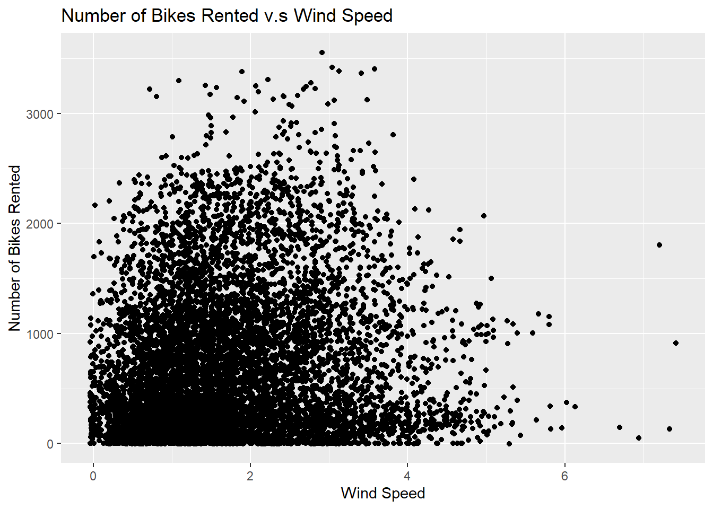
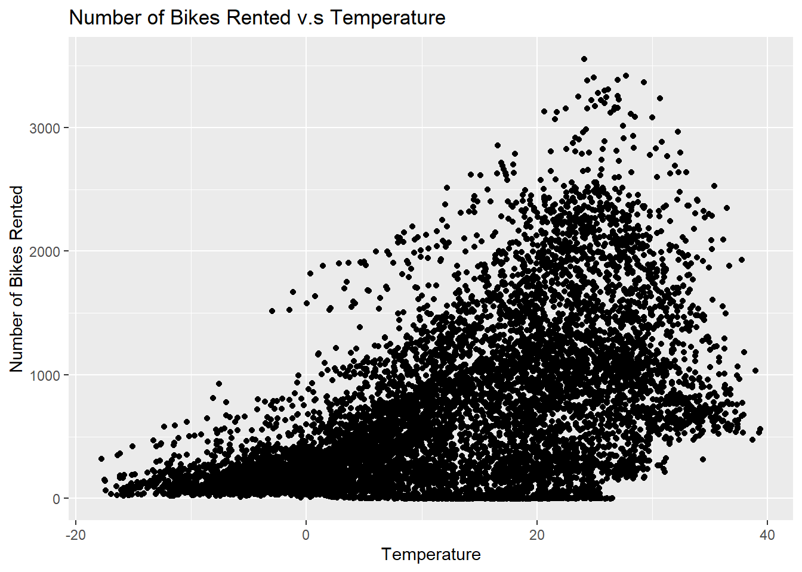
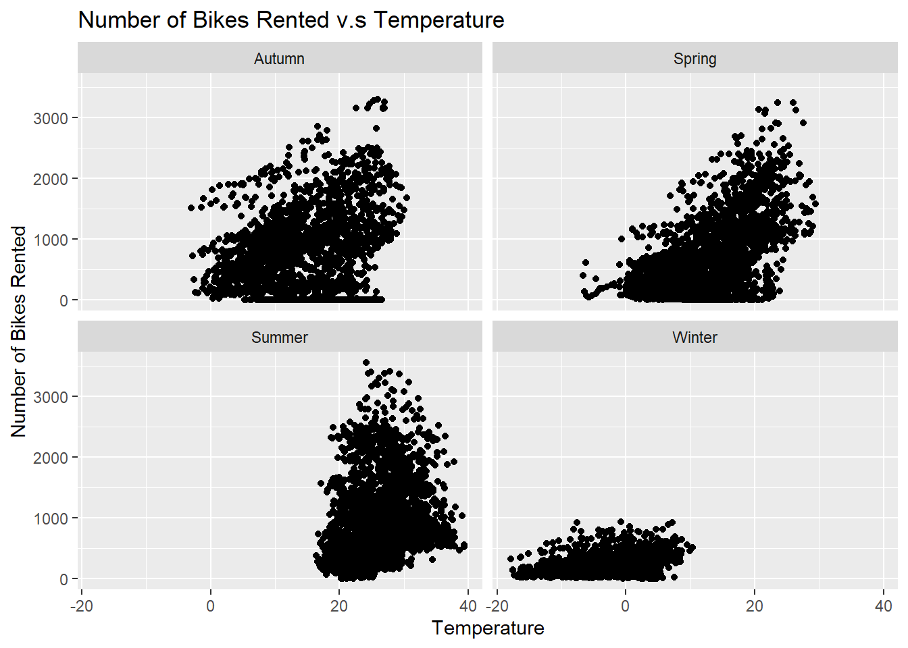
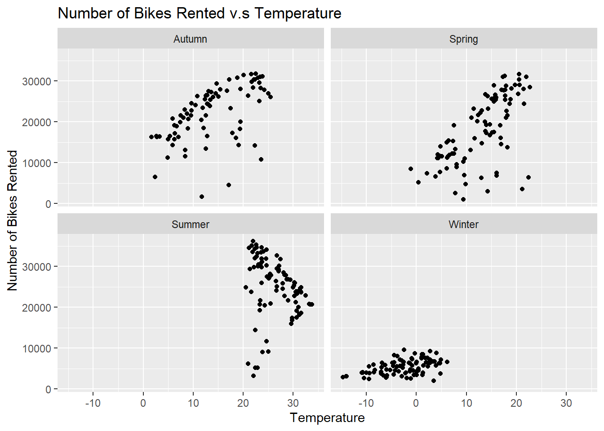

Here we will investigate the columns of the data by looking at column types, checking the summary statistics for the numeric columns and checking the unique values for the categorical variables.
Here we will manipulate the data so that it is easier to work with.
bike <- bike |>mutate(Date = lubridate::dmy(Date), #convert Date column to date typeSeasons =as.factor(Seasons), # convert character variables to factorsHoliday =as.factor(Holiday),Functioning.Day =as.factor(Functioning.Day) ) |>rename("date"="Date", #rename all variables "bike_count"="Rented.Bike.Count","hour"="Hour","temperature"="Temperature.C.","humidity"="Humidity...","wind_speed"="Wind.speed..m.s.","visibility"="Visibility..10m.","dew_point_temp"="Dew.point.temperature.C.","solar_radiation"="Solar.Radiation..MJ.m2.","rainfall"="Rainfall.mm.","snowfall"="Snowfall..cm.","seasons"="Seasons","holiday"="Holiday","functioning_day"="Functioning.Day")
To start our analysis we will create some summary statistics, many of which will relate to bike rental count as we want to explore how bike rental count is effected by the other variables.
bike |>summarize(mean_bike_rent =mean(bike_count), med_bike_rent =median(bike_count))
mean_bike_rent med_bike_rent
1 704.6021 504.5
There is a mean os 704.6 bike rental count per hour.
Contingency Tables
Counts per season
table(bike$seasons)
Autumn Spring Summer Winter
2184 2208 2208 2160
Counts (per day) per Holiday
table(bike$holiday)/24
Holiday No Holiday
18 347
Two way contingency table of Seasons and Holidays (per day)
table(bike$seasons, bike$holiday)/24
Holiday No Holiday
Autumn 5 86
Spring 3 89
Summer 2 90
Winter 8 82
Mean number of bikes rented per hour
bike |>group_by(hour)|>summarize(mean_rented =mean(bike_count))
Notice highest mean bike rental occuring at hour 8 in the morning and 18 in the afternoon. Generally, there are higher means in the afternoon compared to the morning.
Smoothed Conditional Mean graph of number of bikes rented across each hour. Displays information on demand of bike rentals across a day.
g <-ggplot(data = bike, aes(x = hour, y = bike_count))g +geom_smooth() +labs(x ="Hour", y ="Number of Bikes Rented",title ="Number of Bikes Rented Across Each Hour") +scale_x_continuous(breaks =seq(0, 23, 1))
`geom_smooth()` using method = 'gam' and formula = 'y ~ s(x, bs = "cs")'
Mean number of bikes rented by seasons
bike |>group_by(seasons)|>summarize(mean_rented =mean(bike_count))
Notice highest mean bike rentals in summer and lowest mean bike rentals in winter.
Mean number of bikes rented by holiday
bike |>group_by(holiday)|>summarize(mean_rented =mean(bike_count))
# A tibble: 2 × 2
holiday mean_rented
<fct> <dbl>
1 Holiday 500.
2 No Holiday 715.
Notice significant decrease in mean bike rentals on non holiday days.
Mean number of bikes rented by functioning day
bike |>group_by(functioning_day)|>summarize(mean_rented =mean(bike_count))
# A tibble: 2 × 2
functioning_day mean_rented
<fct> <dbl>
1 No 0
2 Yes 729.
Notice there are no bike rentals on non functioning days.
Explore relationships between numeric variables
g <-ggplot(data = bike, aes(x = wind_speed, y = bike_count))g +geom_jitter() +labs(x ="Wind Speed", y ="Number of Bikes Rented",title ="Number of Bikes Rented v.s Wind Speed")

g <-ggplot(data = bike, aes(x = temperature, y = bike_count))g +geom_jitter() +labs(x ="Temperature", y ="Number of Bikes Rented",title ="Number of Bikes Rented v.s Temperature")

g <-ggplot(data = bike, aes(x = temperature, y = bike_count))g +geom_jitter() +facet_wrap(~ seasons)+labs(x ="Temperature", y ="Number of Bikes Rented",title ="Number of Bikes Rented v.s Temperature")

Spring and autumn have very similar density of bike rental bike and we can see how ridership rises with temperature. We can also see how drastic the difference in ridership between summer and winter.
To simplify the analysis, we manipulate the data we subset the data based on functioning, summarize the data so there is one unique value per day.
# A tibble: 2 × 2
holiday mean_rented
<fct> <dbl>
1 Holiday 12700.
2 No Holiday 17727.
Notice significant decrease in mean bike rentals on non holiday days.
Explore relationships between numeric variables
g <-ggplot(data = bike_day, aes(x = wind_speed, y = bike_count))g +geom_jitter() +labs(x ="Wind Speed", y ="Number of Bikes Rented",title ="Number of Bikes Rented v.s Wind Speed")
g <-ggplot(data = bike_day, aes(x = temp, y = bike_count))g +geom_jitter() +labs(x ="Temperature", y ="Number of Bikes Rented",title ="Number of Bikes Rented v.s Temperature")
Relationships between variables overall stay the same just on a different scale.
g <-ggplot(data = bike_day, aes(x = temp, y = bike_count))g +geom_jitter() +facet_wrap(~ seasons) +labs(x ="Temperature", y ="Number of Bikes Rented",title ="Number of Bikes Rented v.s Temperature")

Correlation matrix of numeric variables
# Loadinglibrary(ggcorrplot)
Warning: package 'ggcorrplot' was built under R version 4.4.3
ggcorrplot(corr, title ="Correlation Matrix",lab =TRUE, lab_size =2)
Warning: `aes_string()` was deprecated in ggplot2 3.0.0.
ℹ Please use tidy evaluation idioms with `aes()`.
ℹ See also `vignette("ggplot2-in-packages")` for more information.
ℹ The deprecated feature was likely used in the ggcorrplot package.
Please report the issue at <https://github.com/kassambara/ggcorrplot/issues>.
Focusing on correlation to bike count the highest correlation occurs for temperature, dew point temperature and solar radiation.
Split the data
library(tidymodels)
Warning: package 'tidymodels' was built under R version 4.4.3
set.seed(10)bike_split <-initial_split(bike_day, prop =0.75, strata = seasons) #split the training and test set 75/25bike_train <-training(bike_split)bike_test <-testing(bike_split)bike_train
get_cv_splits <-function(data, num_folds){#get fold size size_fold <-floor(nrow(data)/num_folds)#get random indices to subset the data with random_indices <-sample(1:nrow(data), size =nrow(data), replace =FALSE)#create a list to save our folds in folds <-list()#now cycle through our random indices vector and take the appropriate observations to each foldfor(i in1:num_folds){if (i < num_folds) { fold_index <-seq(from = (i-1)*size_fold +1, to = i*size_fold, by =1) folds[[i]] <- data[random_indices[fold_index], ] } else { fold_index <-seq(from = (i-1)*size_fold +1, to =length(random_indices), by =1) folds[[i]] <- data[random_indices[fold_index], ] } }return(folds)}